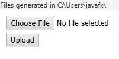

Go to the directory where files were generated:

Modal window with file selection should close, and "test1.txt" text should appear next to "Choose File" button.
A modal window with file selection should open again.
Click on "Cancel" button.
Modal window with file selection should close, and the name of the previously selected file should remain next to "Choose File" button.
The following text should appear:
Files successfully uploaded:
1: Content-Disposition: form-data; name="test"; filename="test1.txt" Content-Type: text/plain test test1.txt